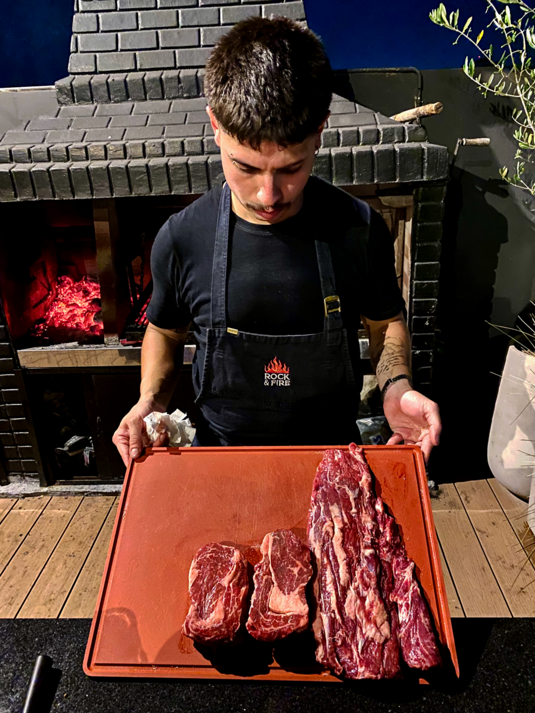
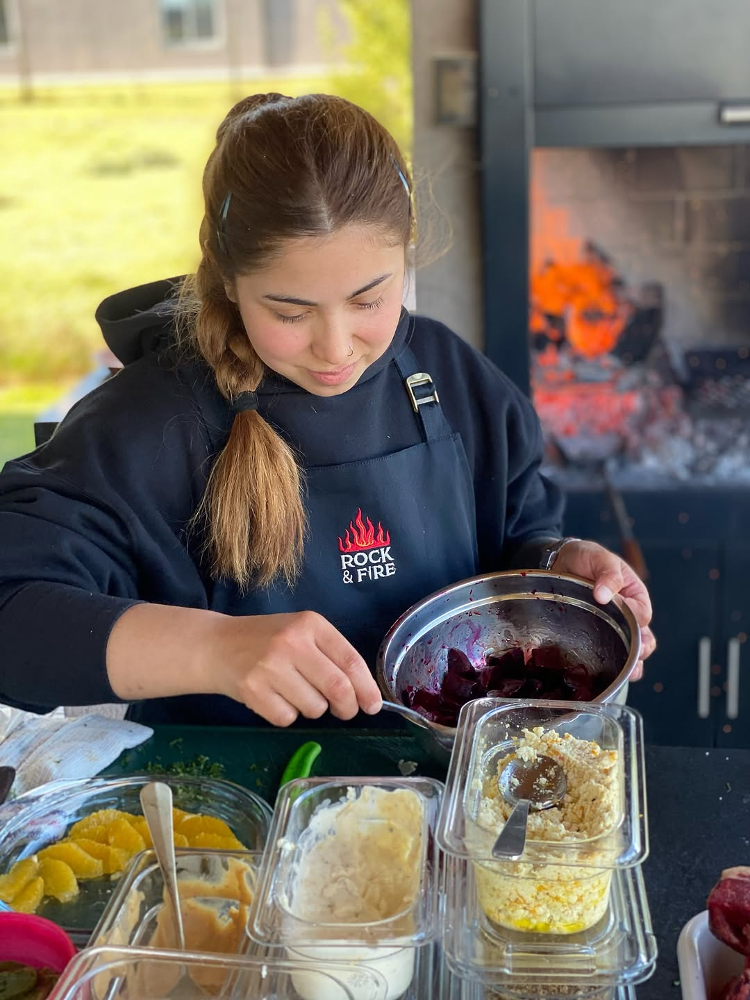

Rock & Fire
Rock & Fire
Rock & Fire
Rock & Fire
Rock & Fire no nació como un servicio de catering. Nació como una forma de vivir la cocina.
Creemos en el fuego como punto de encuentro. En la materia prima como protagonista. Y en la experiencia como algo que se construye desde mucho antes de que el primer plato llegue a la mesa.
Cada evento es el resultado de un proceso: selección de producto, diseño del menú, planificación del espacio, ritmo del servicio y una idea clara de lo que queremos que las personas sientan.
Porque el fuego convoca.
La mesa une.
Y la experiencia queda.

Dirección técnica y ejecución al fuego.
Es quien lleva esa visión a la práctica. Trabaja las brasas, define cocciones, selecciona cortes, organiza estaciones y lidera el ritmo del servicio en vivo.
Su rol no es solo cocinar: es traducir la idea gastronómica en una experiencia tangible, precisa y potente frente a los invitados.

Chef creativa y dirección gastronómica de Rock & Fire.
Es quien desarrolla los sabores, diseña los platos y define la identidad culinaria de la marca. Investiga combinaciones, trabaja estacionalidad, construye armonías y transforma una idea en experiencia concreta.
Cada menú que sale al fuego fue antes pensado, probado y conceptualizado por ella. Es la sensibilidad, la coherencia y la evolución constante del proyecto.